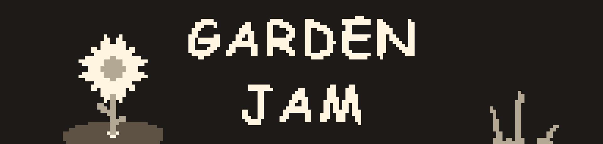

WELCOME TO GARDEN JAM
GIỚI THIỆU
Garden Jam là một tập hợp các trò chơi có cơ chế và hình ảnh đơn giản với chủ để là một khu vườn với tông màu ấm áp. Bạn có thể
chơi một vài trò chơi để giúp thư giãn đầu óc (hoặc không). Hiện tại trò chơi vẫn đang trong quá trình phát triển nên bạn hãy
tận hưởng những trò chơi đã được hoàn thành trước. Vì là đang trong quá trình phát triên nên việc gặp lỗi là chuyện bình thường.
MỤC ĐÍCH
Garden Jam thực ra được làm ra để nhà phát triển học, khám phá và rèn luyện cách lập trình Trò chơi lẫn Trang Web. Cụ thể là trên
phần mềm Gamemaker Studio 2 - Godot và HTML - CSS.
TRÒ CHƠI
Như đã giới thiệu ở trên, các trò chơi sẽ có cơ chế và hình ảnh đơn giản.
Danh sách trò chơi
Các trò chơi
FILL THE FLOWER BASKET
Fill the flower bag khá giống với trò chơi đập chuột nhưng ít ô hơn. Ở đây bạn sẽ sử dụng phím WASD hoặc Phím mũi tên để hái hoa
ở các ô đất tương ứng. Bạn cần hái đủ bông hoa để chiến thắng nhưng chỉ trong thời gian ngắn. Nhưng đừng lo vì mỗi lần bạn hái
được hoa bạn sẽ được tăng thêm thời gian nhưng nếu bạn hái trễ hoặc hái trượt bạn sẽ mất đi vài giây.

CARROTS IN THE DARK
Carrots in the dark là trò chơi tìm củ cà rốt trong bóng tối. Bạn cần hái đủ cà rốt trong thời gian quy định để thắng.
Bạn sẽ được cung cấp một chiếc đèn pin để soi sáng, sẽ có những bông hoa ánh sáng giúp bạn nạp lại pin nhưng pin của bạn sẽ tuột càng ngày càng nhanh.
Hãy cẩn thận vì nếu bạn bấm trượt bạn sẽ mất một chút pin.